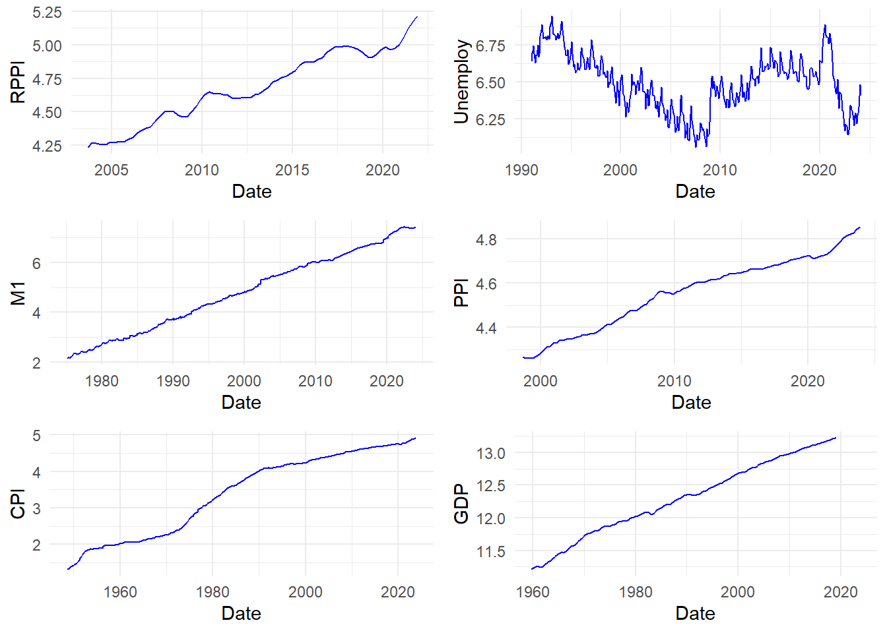
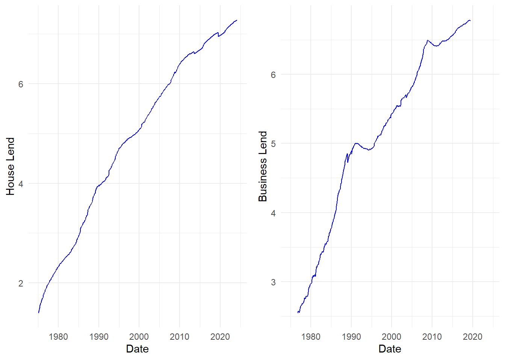
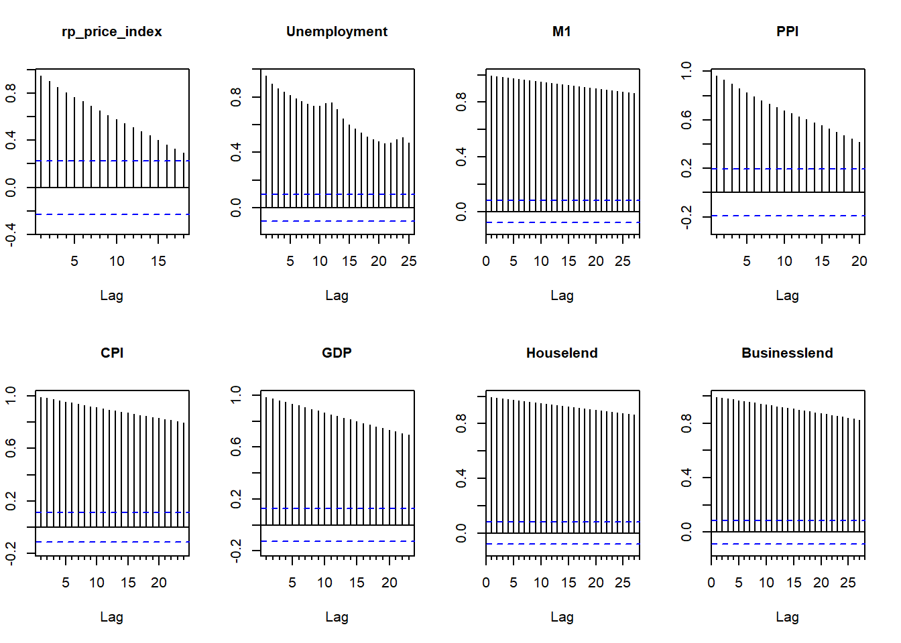
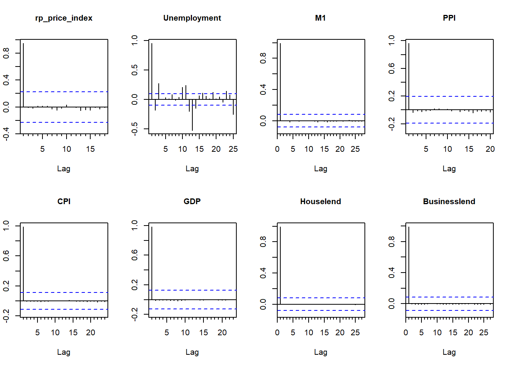

Forecasting Lending Amount in Australia Economy Through Bayesian VAR Approach
This research project works for the assessment in ECOM90007 Macroeconometrics, which is the capstone subject in Master of Applied Econometrics in University of Melbourne.
Keywords. bsvars, forecasting, loan market, lending rates, shrinkage, housing market
Introduction
This project is focusing on the credit market in Australia. It intends to use Bayesian VAR approach in forecasting of lending amounts.
The Research Objective and Question
The research aims to forecast lending indicators, specifically lending amounts, in Australia. Thus, the research question is: How can the lending indicators in Australia be accurately forecasted, and what are the resulting forecasts?
Motivation of Research
For banks and related financial institutions, they need to manage the risks associated with future interest rate fluctuations. Accurate lending amount forecasting can assist them in better assessing and managing risks, thereby safeguarding their assets and maintaining financial stability.
Data and Properties
This section shows the data collection and their descriptive statistic including their series plotting and basic properties analyzing.
Variables Selection
The selection of variables grounds in several macroeconomic indicators, derived from the official databases of the Australian Bureau of Statistics (ABS) and the Reserve Bank of Australia (RBA). The rationale for the choice of variables is informed by the work of scholars Marta Bańbura, Domenico Giannone, and Michele Lenza (2015) on European macroeconomic forecasting.
These indicators are closely linked to both loan rates and volumes. An increase in CPI and housing price indices signifies a decline in the purchasing power of money, necessitating a rise in loan rates to compensate for inflationary losses. Growth in GDP indicates economic expansion, leading to increased demand for capital, and consequently, higher loan volumes and rates. Higher unemployment rates suggest an economic downturn, prompting banks to lower interest rates to stimulate the economy. Additionally, an abundance of monetary supply leads banks to reduce loan rates to attract more borrowers.
Therefore, in my project, these following specific variables are used in BVAR model:
\(M1_t\): M1 aggregate from RBA Database
\(CPI_t\): CPI aggregate from ABS Database
\(RPPI_t\): Residential Property Price Index aggregate from ABS Database
\(GDP_t\): Expenditure on Gross Domestic Product (GDP) aggregate from ABS Database
\(UNEMPLOY_t\): Unemplyemnt person aggregate from ABS Database

For the loan volumes to be forecasted, I have categorized them into housing loans and commercial loans, as they represent two distinct types of demand. The underlying logic influenced by macroeconomic factors might differ between them:
\(House Lending_t\): House lending volume aggregate from RBA
\(Business Lending_t\): Business lending volume aggregate from RBA

Test Test_Statistic P_Value Lags
Dickey-Fuller rp_price_index -3.04993172 0.1473984 5
Dickey-Fuller1 Unemployment -2.43096944 0.3952424 5
Dickey-Fuller2 M1 -2.60332764 0.3229284 5
Dickey-Fuller3 PPI -1.93273093 0.6045645 5
Dickey-Fuller4 CPI -1.25293390 0.8911931 5
Dickey-Fuller5 GDP -2.57629126 0.3335192 5
Dickey-Fuller6 Houselend -0.01426528 0.9900000 5
Dickey-Fuller7 Businesslend -1.50525363 0.7877237 5 Test Test_Statistic P_Value Lags
Dickey-Fuller rp_price_index - First Difference -2.434671 0.39828025 5
Dickey-Fuller1 Unemployment - First Difference -10.088903 0.01000000 5
Dickey-Fuller2 M1 - First Difference -9.972948 0.01000000 5
Dickey-Fuller3 PPI - First Difference -3.817442 0.02076893 5
Dickey-Fuller4 CPI - First Difference -4.085296 0.01000000 5
Dickey-Fuller5 GDP - First Difference -6.707176 0.01000000 5
Dickey-Fuller6 Houselend - First Difference -7.062507 0.01000000 5
Dickey-Fuller7 Businesslend - First Difference -6.713399 0.01000000 5
